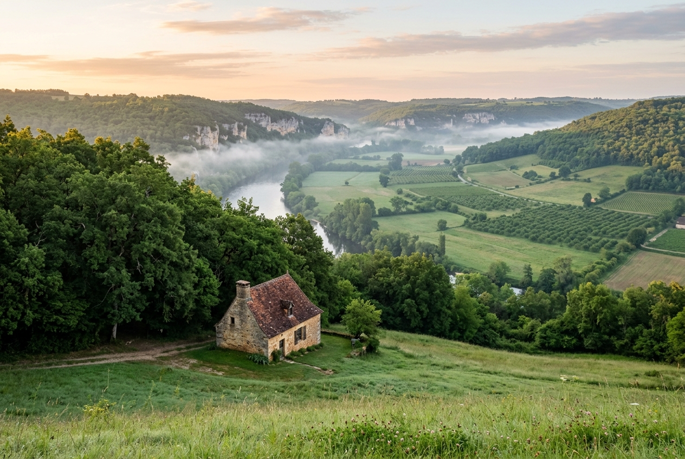
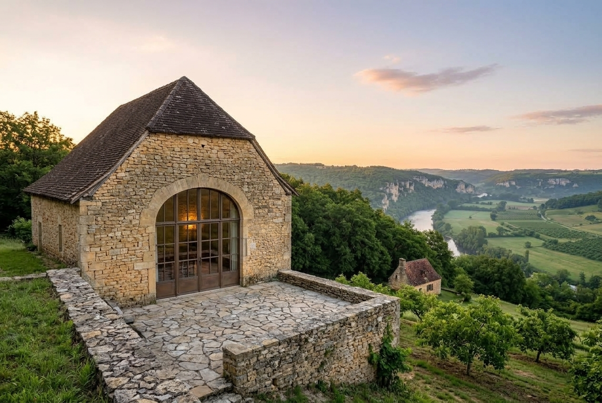

La région
Autour d’Alles-sur-Dordogne
Le Coteau regarde la vallée de la Dordogne, là où la rivière dessine ses grandes boucles avant de retrouver la Vézère. Villages perchés, abbayes, grottes : tout ce qui suit est rangé par le temps qu’il faut pour y aller.
À pied 20 minutes de marche au plus
La Dordogne au pied du coteau
Une plage de galets, l’eau claire et peu profonde en été ; on y pique-nique à l’ombre des frênes.
Voir sur la carteLe sentier des noyers
Une boucle de 5 km qui part du portail, entre les noyeraies et le bord du plateau.
Voir sur la carte
À quelques minutes 15 minutes de route au plus
Limeuil
Village perché au confluent de la Vézère et de la Dordogne, ses ruelles, ses jardins panoramiques.
Le conseil de Thomas : montez aux jardins en fin de journée, quand la lumière rase les deux rivières.
Voir sur la cartePhoto Père Igor, CC BY-SA 4.0 Le cingle de Trémolat
La plus grande boucle de la Dordogne, vue du belvédère au-dessus des champs.
Voir sur la cartePhoto Père Igor, CC BY-SA 4.0 Cadouin
Une abbaye cistercienne et son cloître gothique, au creux de la forêt de la Bessède.
Voir sur la cartePhoto Thesupermat, CC BY-SA 3.0
.jpg){kind=link}
.jpg){kind=link}

À la demi-journée 45 minutes au plus
Les Eyzies
Le musée national de préhistoire et les abris sous roche de la vallée de la Vézère.
Voir sur la cartePhoto Père Igor, CC BY-SA 4.0 Beynac
Le château sur sa falaise, au-dessus de la Dordogne et des gabares.
Le conseil de Marie : garez-vous en bas, et montez par le village plutôt que par la route.
Voir sur la cartePhoto Jebulon, CC0 Photo Benjamin Smith, CC BY-SA 4.0
.jpg){kind=link}


À la journée au-delà
Lascaux IV
La reproduction intégrale de la grotte, à Montignac, dans la vallée de la Vézère ; réservez vos places à l’avance l’été.
Voir sur la cartePhoto Renhour48, CC0 Photo Dynamosquito from France, CC BY-SA 2.0


Les marchés
Un marché presque chaque matin.
- Lundipas de marché proche
- MardiLe Bugue, le matin
- MercrediSarlat, le matin
- JeudiLalinde, le matin
- VendrediLe Buisson-de-Cadouin, le matin
- SamediSarlat, toute la journéeLe Bugue, le matin
- DimancheSaint-Cyprien, le matin
Au fil des saisons
Quand venir ?
La même vue, depuis la fenêtre du séjour, et les rendez-vous de chaque saison.
Printemps
Les noyers reprennent leurs feuilles, la Dordogne est haute, les jardins de Limeuil rouvrent. Le meilleur moment pour marcher.
- Mai · La fête de la fraise, Vergt
Été
L’eau est bonne au pied du coteau, les villages s’animent. Réservez tôt Lascaux IV et les canoës.
- Fin juillet · Le festival des jeux du théâtre, Sarlat
Automne
La récolte des noix, les brumes du matin sur la vallée, les cèpes dans la forêt de la Bessède.
- Mi-septembre · Les journées du patrimoine, partout
- Mi-novembre · Le festival du film, Sarlat
Hiver
Les marchés aux truffes, les feux de bois, les villages rendus à leurs habitants.
- Décembre · Le marché de Noël, Sarlat
- Mi-janvier · La fête de la truffe, Sarlat
Venir
Jusqu’au Coteau.
En voiture
Le chemin du Coteau monte depuis le village ; au portail de bois, garez-vous : la maison est à 80 m, sous les noyers, sans éclairage le soir.
Chemin du Coteau, 24480 Alles-sur-Dordogne
En train
Gare du Buisson, à 6 km (8 minutes). Thomas vient vous chercher, sur demande.
En avion
Aéroport de Bergerac, à 40 km (45 minutes) ; loueurs de voitures sur place.
Pour tout le reste, horaires et billetterie : l’office de tourisme de la vallée de la Dordogne.
Les gîtes
Deux gîtes, pour poser vos sacs.

